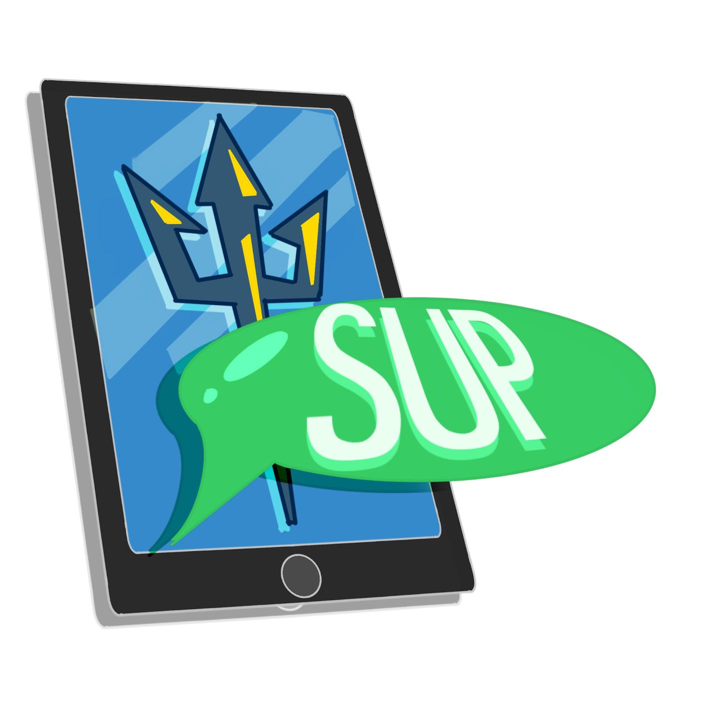
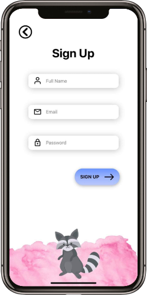
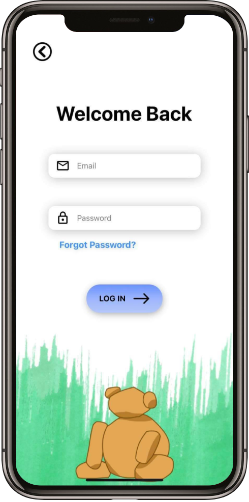
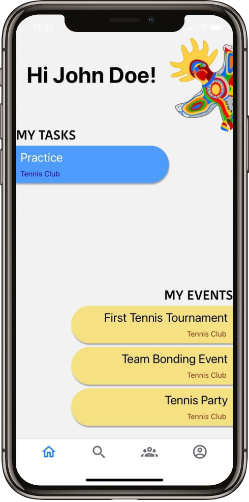
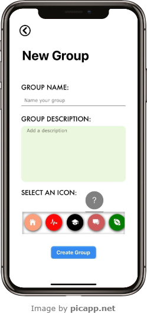
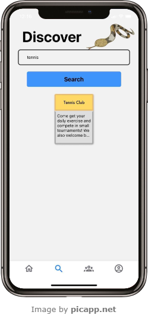
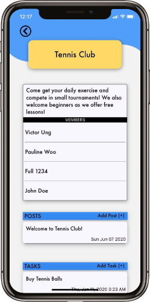
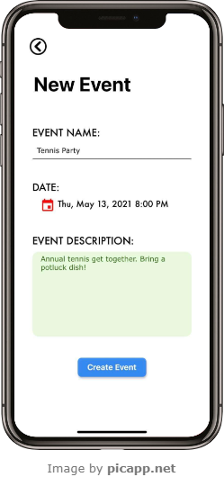
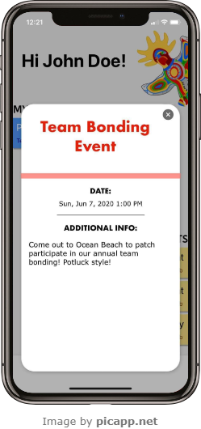

Social University Platform
Keeping College Students Connected
- March 2020 - June 2020
- Role: Senior System Analyst
- Scope: Agile Software Dev, UI/UX Design

Background
College is overwhelming. It's easy to lose yourself and feel unmotivated.
During these times, it's nice to have a supportive friend group that can
help get you back on your feet. Unfortunately, campuses are gaining more
and more students, which makes forming friendships a dreadful experience.
The first place to look would be the various clubs and organizations on
campus. However, even the number of clubs can be abundant, which can be
intimidating at times.
The Problem
Colleges need a centralized platform for clubs and organizations to
reach out to students in order to promote their events. In turn, this
would enable students to foster a social, helpful network of friends.
Solution Briefing
That's where my team and I come in! We developed an iOS mobile application
called Social University Platform (SUP for short) which allows students to
stay connected with each other and the events going on around campus.
It also allows them to form groups to keep track of deadlines/responsibilities.
This project began in one of my classes, where students form teams of 10
to simulate what it’s like to work in the industry. This case study
documents how it all transpired and what I learned from this experience.

A Rough Start
This was a huge project taking place during the early stages of the
pandemic, and we were very disorganized at the beginning. Meetings
were difficult to arrange because so many students were moving around
and settling in at home because campus was closed.
We also had problems deciding the roles for each person, and there was a
dispute over who would be the project manager. To resolve the problem of
assigning roles, we let those who really wanted a role speak up first.
Then we began asking for volunteers. However, when it got to the 'Project
Manager' role, about three people wanted the role, which was dealt with by
a majority-ruled voting session. Fortunately, everyone got a role they
were satisfied with. Even though this was a 10-week class, we probably
didn't properly start till Week 2.
I learned from this experience that cohesion is an important factor in
the success of any team. Members need to be on the same page and each
one must be motivated to work together and compromise.
Slow and Steady Wins the Race
The first few weeks were spent drafting use cases, user stories, and
ifferent drafts of our screen designs (see attached documents below).
After we decided on the technologies (React and Firebase) and the
initial design of the application, we finally began coding around Week 5/6.
Although we were a little pressured on time at the end, without the
effort put into preparing all these materials, we wouldn't have been
able to stay on track.
I never realized how dynamic a project could be! Everyday there were
problems, with either quick or hard fixes. Team members constantly
brought up great points about the product, making us rethink our design
and functionality.
My Role
I was the Senior System Analyst, and I was responsible for the Use Cases
and User Stories. In addition to these agile software development
documents, I worked on the frontend team: designing not only the stylistic
choices, but also the functionality of the application.
The Product
Unique account creation and relevant design choices
- Separate accounts give users both security and individualism.
- Screens with noticeable college monuments/features to develop a sense of connection throughout the campus.


Personal homepage
- Each student is unique and has a their own schedule to maintain.
- Ability to prioritize events and deadlines accordingly.

Groups
- Group creation for either large clubs, small dorms, or anything the user needs.



Events
- The ability to create events and view event details.


Demo Video
That's a Wrap
News flash! My team and I got an A on our final project. I learned so
much from this experience. Personally, I think we could've started
meeting a lot earlier to get everyone on the same page. We were
definitely late bloomers, but I'm proud of us nonetheless.
I hope working in the industry is as rewarding as this project was.
More Documents
Research Poster Overview
Zoom in on any feature of the poster here